Nuestros Productos
| 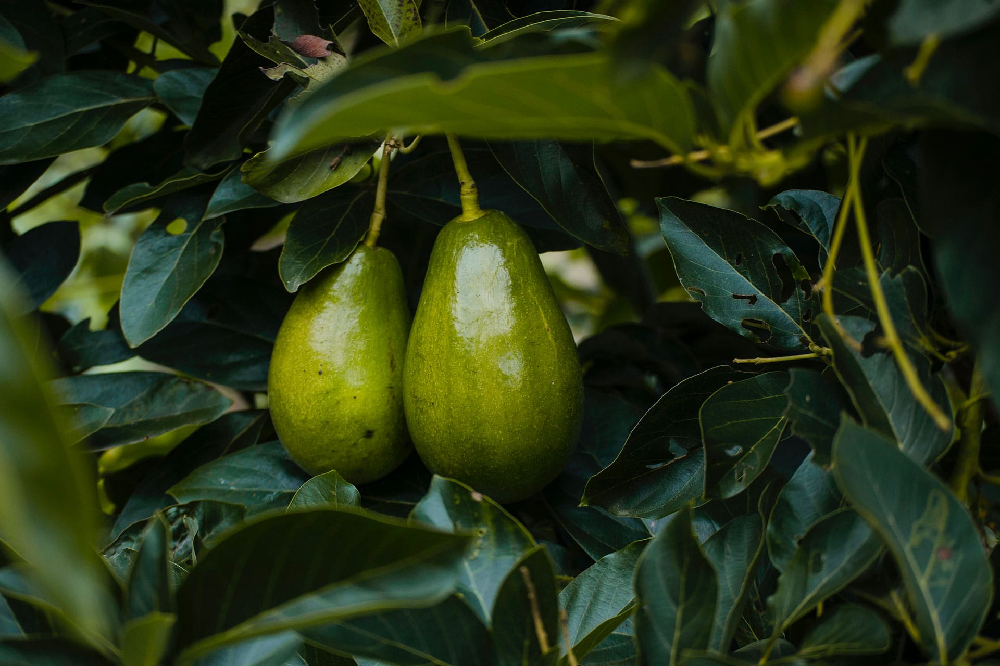Bacon | 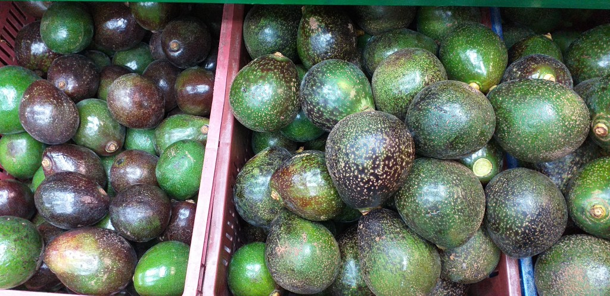Coolinreed |
| 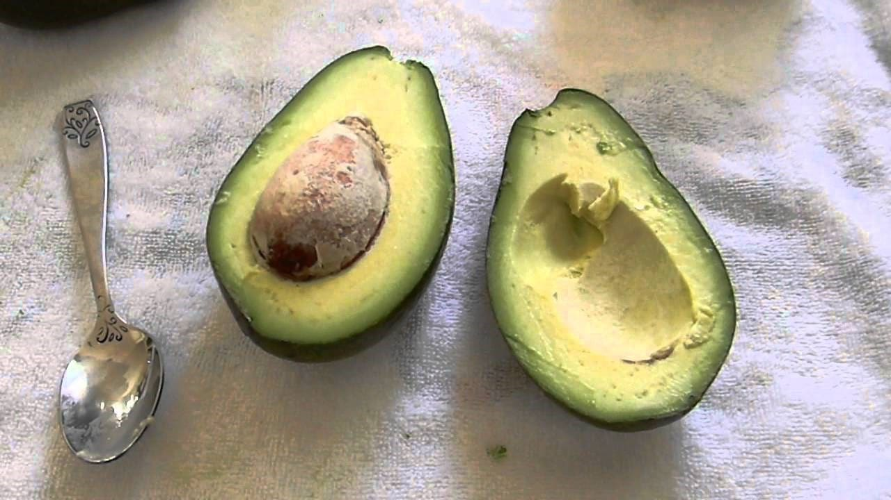Ettinger |  Fuerte Fuerte |
| 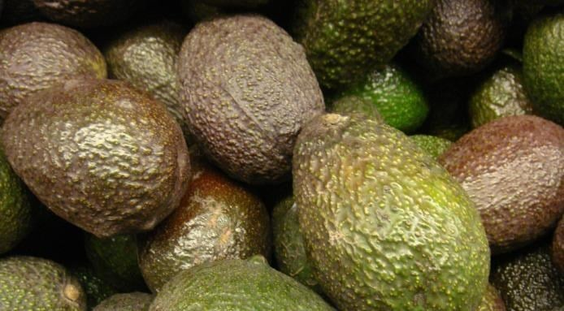HASS | 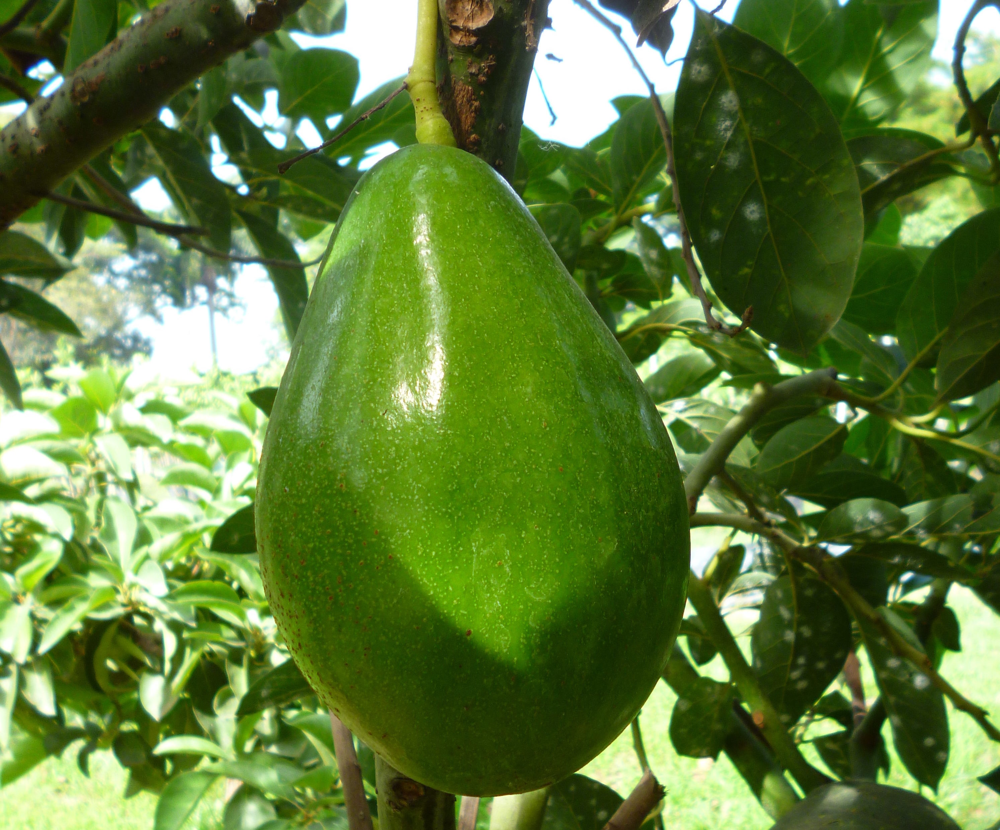Lorena |
La cadena productiva del aguacate en Colombia está conformada por los productores, comercializadores, industrias de procesamiento, productores de material vegetal, proveedores de insumos, exportadores, universidades, centros de investigación e instituciones adscritas al Gobierno Nacional que acompañan el proceso como el Instituto Colombiano Agropecuario-ICA y el SENA. El aguacate que se cultiva en el país corresponde a las razas antillana, guatemalteca y mexicana e híbridos entre ellas. Las variedades más cultivadas en Colombia son Lorena, Trinidad, Booth-8, Fuerte, Hass, Trapo, Santana, Colinred y Ettinger. Se estima que en el país existen alrededor de 13.000 productores en cerca de 18.113 unidades productivas cuya principal actividad económica se deriva de este cultivo.
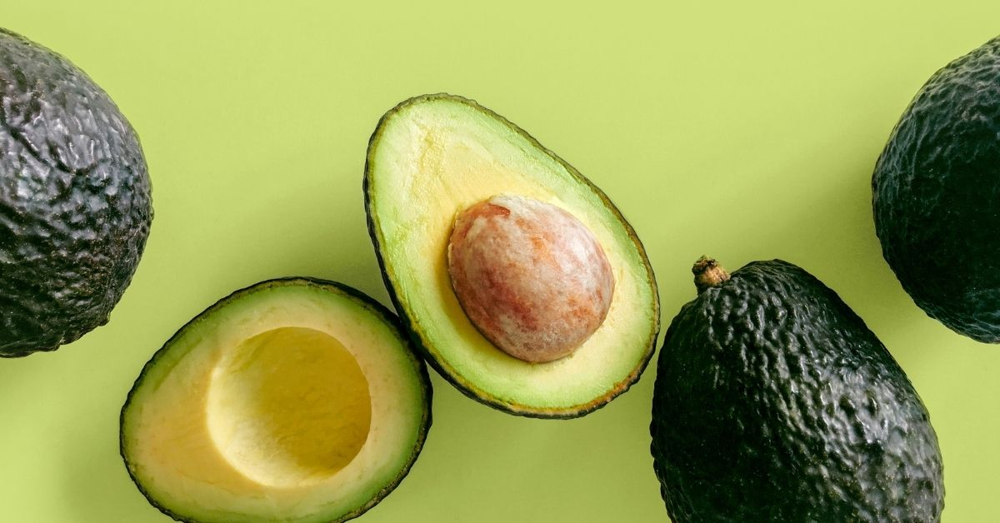El aguacate Hass fue desarrollado por Rudolph Hass, un horticultor y postalero estadounidense, en la década de 1920. Fue seleccionado de forma natural de un árbol de aguacate en su huerto en La Habra Heights, California. La principal característica distintiva del aguacate Hass es su piel rugosa y su capacidad para madurar lentamente sin ablandarse demasiado. La pulpa del aguacate Hass es rica en grasas saludables, especialmente ácido oleico, así como en fibra, vitaminas y minerales. Se utiliza en una amplia variedad de preparaciones culinarias, como guacamole, ensaladas, salsas, aderezos para sandwiches y platos principales. También se utiliza en preparaciones dulces, como batidos, helados y postres. El aguacate Hass es conocido por su sabor suave y cremoso, así como por su textura mantecosa. Se ha convertido en una de las variedades de aguacate más populares debido a su versatilidad en la cocina, su buena capacidad de almacenamiento y transporte, y su agradable sabor y textura.
El aguacate Choquette es una variedad de aguacate (Persea americana) que se caracteriza por tener una forma ovalada o elíptica, con una piel gruesa y rugosa de color verde oscuro, y una pulpa cremosa y mantecosa de color verde claro. Es una variedad de aguacate de tamaño grande a muy grande, con un promedio de peso de 18 a 30 onzas (500 a 850 gramos), aunque puede llegar a pesar hasta 3 libras (1,4 kg) en algunos casos. El aguacate Choquette es originario de Florida, Estados Unidos, y se cultiva principalmente en esa región. Es conocido por su sabor suave y rico, con una textura cremosa que lo hace ideal para utilizarlo en guacamole, ensaladas, salsas, y otros platos culinarios. También se puede usar en preparaciones dulces, como batidos y postres. Esta variedad de aguacate se considera de temporada tardía, madurando generalmente entre noviembre y abril. Tiene una buena capacidad de almacenamiento y transporte debido a su piel gruesa, lo que lo hace adecuado para el comercio y distribución a larga distancia. En resumen, el aguacate Choquette es una variedad de aguacate grande, con piel gruesa y rugosa, pulpa cremosa y mantecosa, y sabor suave y rico. Es originario de Florida y se utiliza en una variedad de preparaciones culinarias.
El aguacate Fuerte fue introducido en California, Estados Unidos, en la década de 1910 y se considera una de las variedades de aguacate más antiguas. Se le dio el nombre de "Fuerte" debido a su resistencia a las enfermedades y su capacidad para soportar condiciones climáticas adversas. La pulpa del aguacate Fuerte es rica en grasas saludables, especialmente ácido oleico, así como en fibra, vitaminas y minerales. Se utiliza en una amplia variedad de preparaciones culinarias, como guacamole, ensaladas, salsas, aderezos para sandwiches y platos principales. El aguacate Fuerte también se utiliza en la industria alimentaria para la producción de aceite de aguacate. El sabor del aguacate Fuerte se describe como suave y cremoso, aunque puede variar ligeramente dependiendo del grado de madurez. La textura de su pulpa es mantecosa y se desliza fácilmente con una cuchara. A diferencia del aguacate Hass, que se utiliza con mayor frecuencia en la exportación y se ha vuelto más popular en muchas regiones del mundo, el aguacate Fuerte es más común en ciertas áreas, como California y México.
| 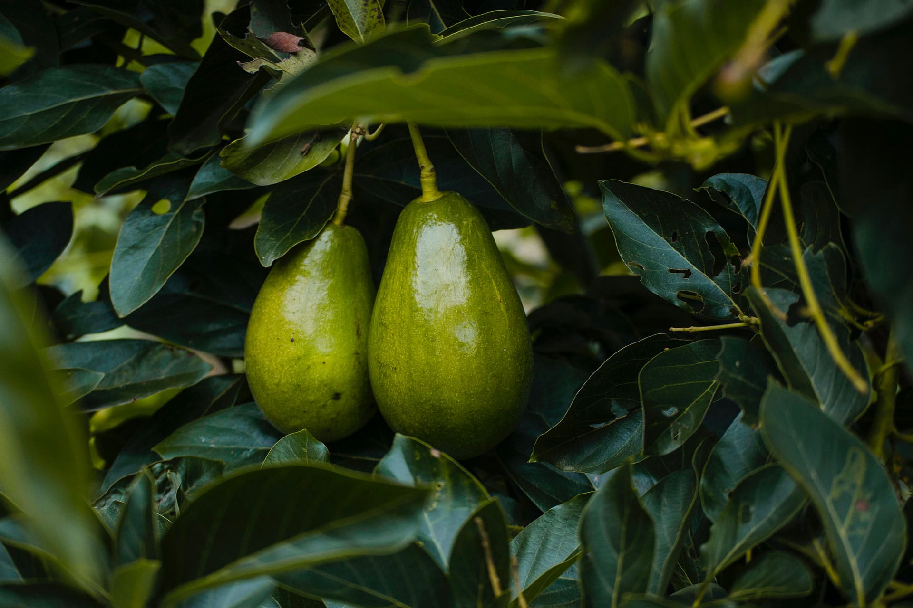Bacon | 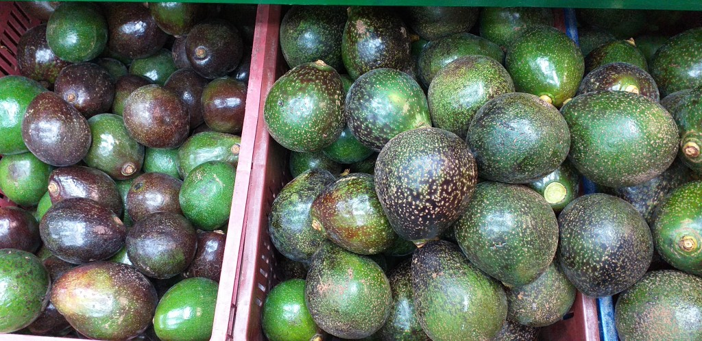Coolinreed |
| 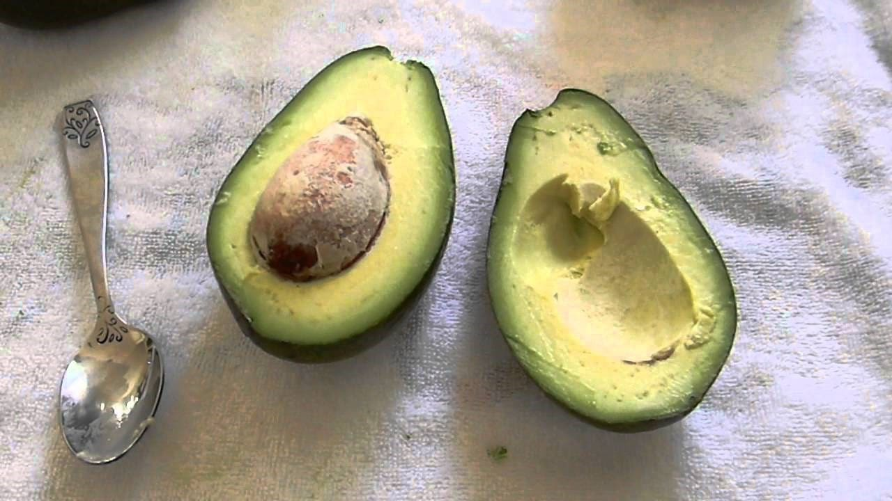Ettinger | Fuerte |
| 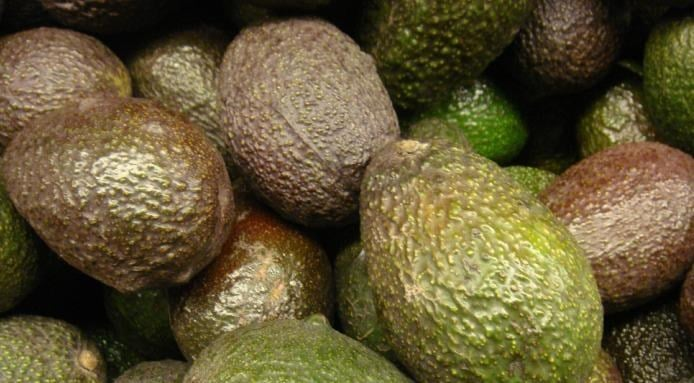HASS | 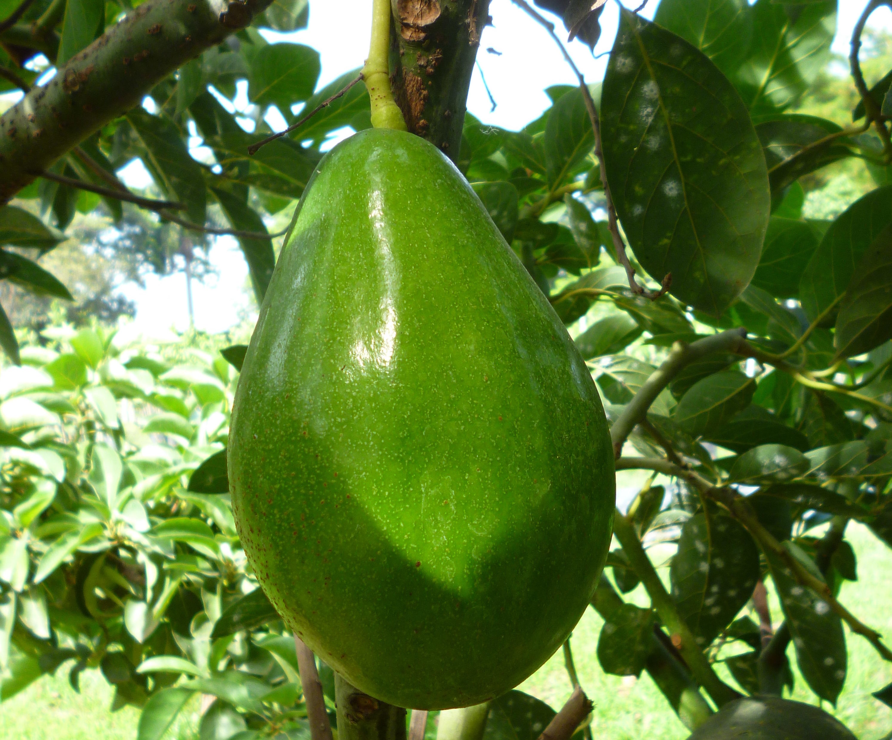Lorena |